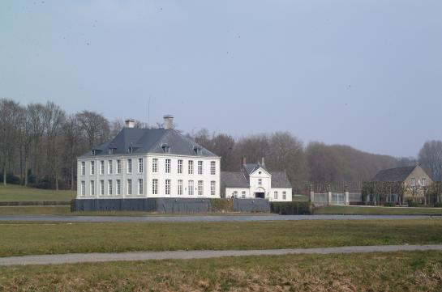
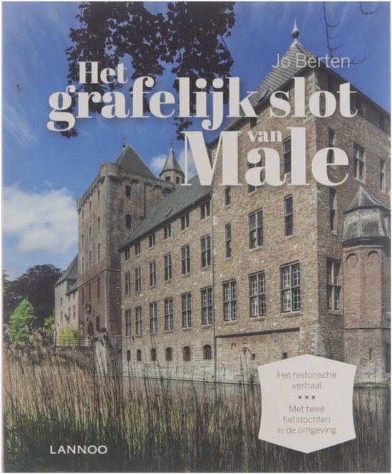
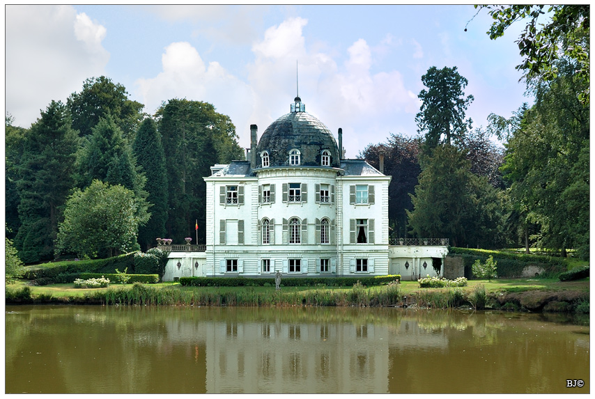
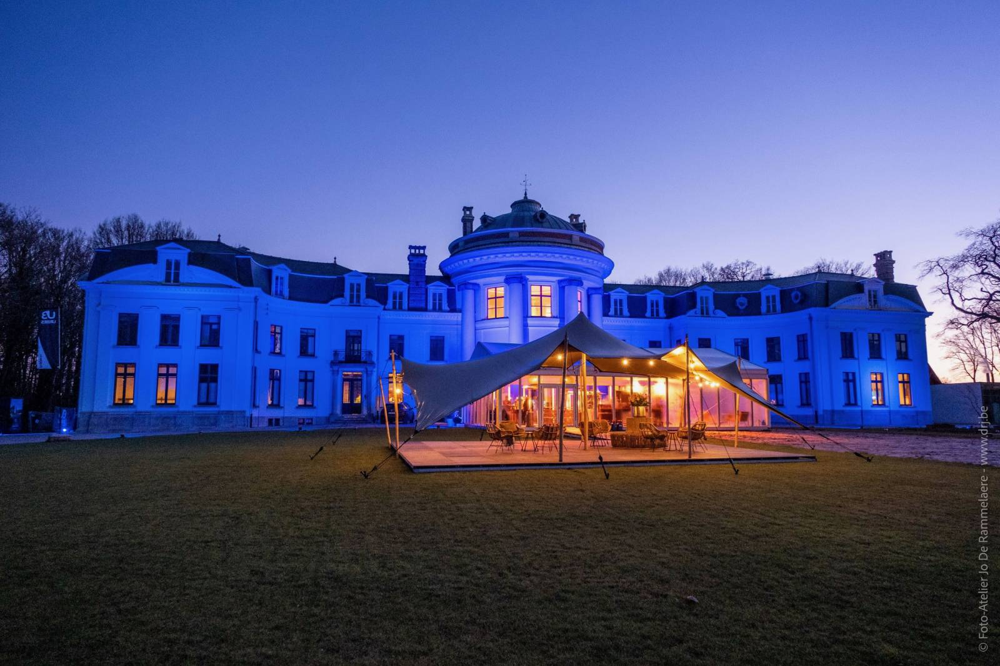
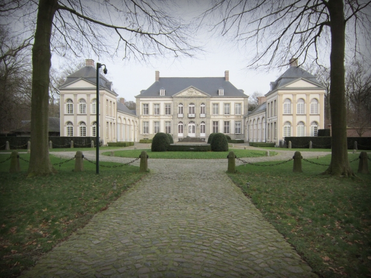
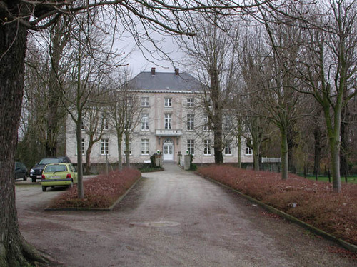
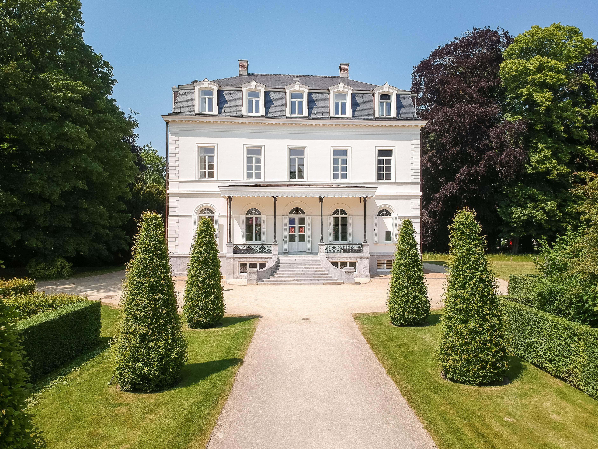
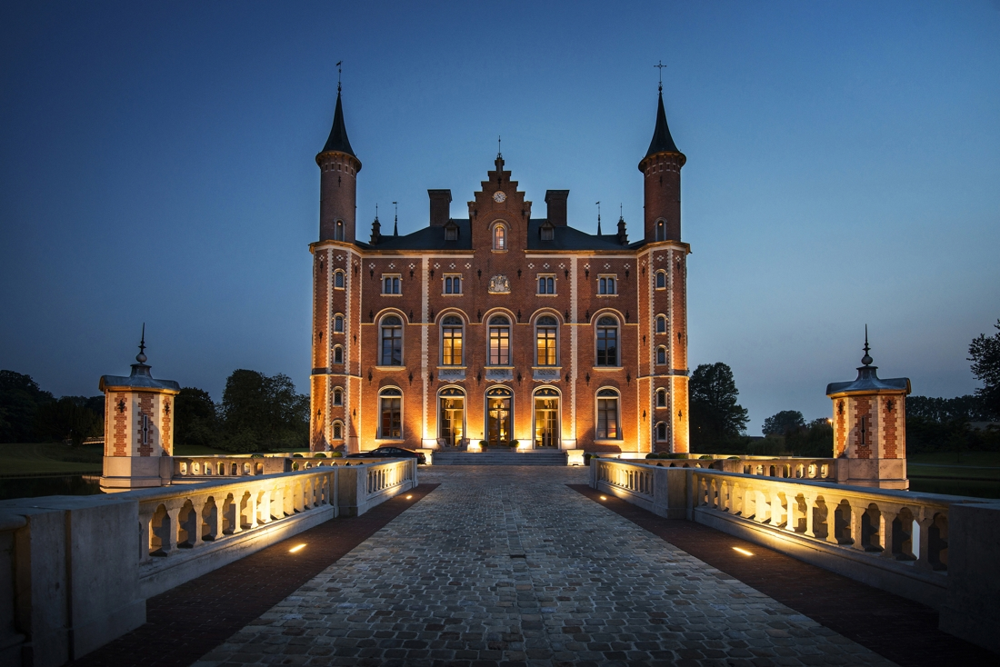
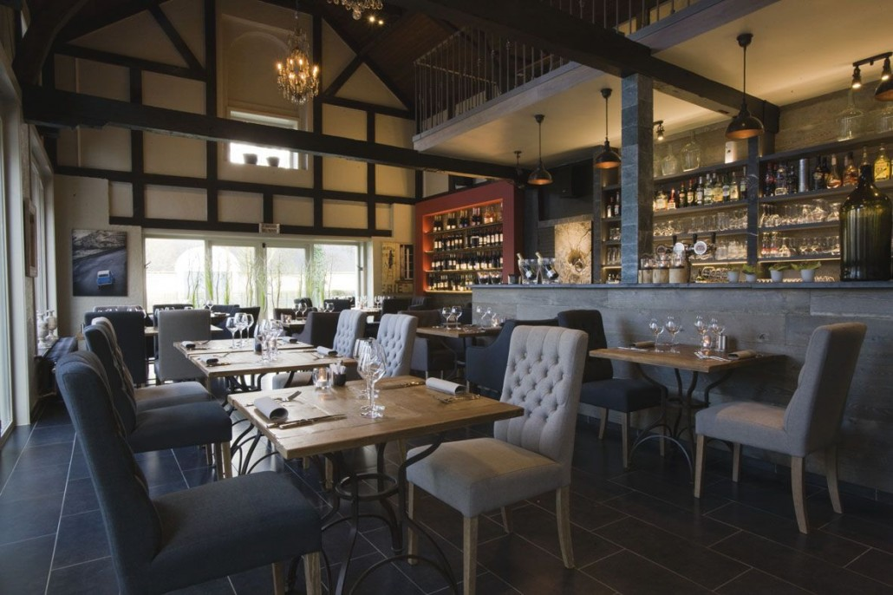

De mooiste kastelen in West-Vlaanderen
Sommige liggen in of net buiten Brugge, andere midden in de polders, aan de kust of in de rustige Westhoek. Klik door naar de afzonderlijke kasteelpagina's voor foto's, achtergrondinformatie en praktische tips voor je bezoek.











